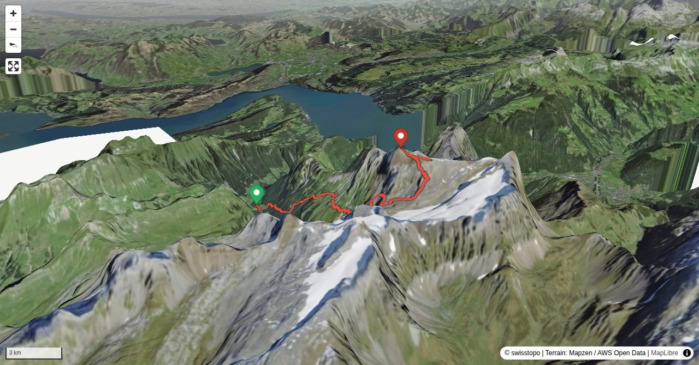

Der Uri Rotstock zählt eindeutig zu den begehrten Alpinwander-Zielen in der Zentralschweiz – als wäre er ein Viertausender. Das liegt sowohl an der umfassenden Aussicht wie auch an den relativ leichten Zustiegsrouten – sofern die Verhältnisse stimmen. Dafür stellt die Besteigung gewisse Anforderungen an die Fitness. Mit der Musenalp, der Gitschenhörelihütte und der Biwaldalp stehen jedoch drei Unterkünfte zur Verfügung, um die Strapazen der Tour auf zwei Tage zu verteilen.
Weiter unten im Abstieg auf ca. 2180 m geht es ein kurzes Stück über plattigen, meist nassen Fels (ebenfalls drahtseilgesichert), der ebenfalla mit Vorsicht zu begehen ist. Zum Schluss führt der Weg über den besonders am Nachmittag manchmal viel Wasser führenden und daher heiklen Firnbach. Eine Kette hilft hier ans andere Ufer - aber nass wird man oftmals trotzdem.
Quick Facts
| Summit elevation | 2921 m |
|---|---|
| Difficulty | SAC T4 Alpine hiking with exposure, rougher terrain, and sections that are not suitable for beginners. Guide |
| Trailhead | St. Jakob (Isenthal) |
| Distance | 20.3 km (out-and-back) |
| Total ascent | ~1962 m |
| Elevation range | 769-2921 m |
| Route sources | SAC Route Portal |
Photos


Route Map & Elevation
i
i
sac_scale (precise T1–T6) with
swissTLM3D Wanderwegart
fallback where OSM is silent (coarser T2/T3 and T4+ buckets).
Coverage: OSM 73.4% · swisstopo 25.9% · unknown 0.0%.Elevations computed from the inlined GPX track (SwissTopo height API).
Loading forecast…
3D Terrain View

Route Details
Von St. Jakob über die Gitschenhörelihütte mit Abstieg zur Musenalp
- St. Jakob - Biwaldalp 2 Std.
- Biwaldalp - Gitschenhörelihütte 2 Std.
- Gitschenhörelihütte - Uri Rotstock 1 Std. 45 Min.
- Uri Rotstock - Musenalp 2 Std. 30 Min.
- Musenalp - Isenthal 1 Std. 15 Min. (mit Seilbahn minus rund 300 Hm. und 30 Min.)
Terrain & safety
Die anspruchsvollsten Stellen sind die zwar steilen aber sehr gut drahtseilgesicherten und mit vielen Trittmöglichkeiten ausgestatteten Passagen von P. 2428 hinauf zu P. 2659. Im Abstieg ist der Chlitaler Firn bei Ausaperung rutschig und kann vor allem im obersten Teil mühsam zu begehen sein, er kann aber via Rotstocksattel (weglos) umgangen werden. Weiter unten im Abstieg auf ca. 2180 m geht es ein kurzes Stück über plattigen, meist nassen Fels (ebenfalls drahtseilgesichert), der ebenfalla mit Vorsicht zu begehen ist. Zum Schluss führt der Weg über den besonders am Nachmittag manchmal viel Wasser führenden und daher heiklen Firnbach. Eine Kette hilft hier ans andere Ufer - aber nass wird man oftmals trotzdem.
Source: SAC Route Portal
Getting There & Back
Start: St. Jakob (Isenthal) (978 m)
Directions from to St. Jakob (Isenthal)
End: Isenthal, Post (770 m)
Directions from Isenthal, Post back to
Field Reference
| Trailhead | St. Jakob (Isenthal) | 46.90170, 8.52280 |
|---|---|---|
| Summit | Uri Rotstock (2921 m) | 46.86176, 8.53520 |
Coordinates are WGS84 decimal degrees (lat, lon). Emergency: 112 (general) or 1414 (Rega air rescue). Page URL: